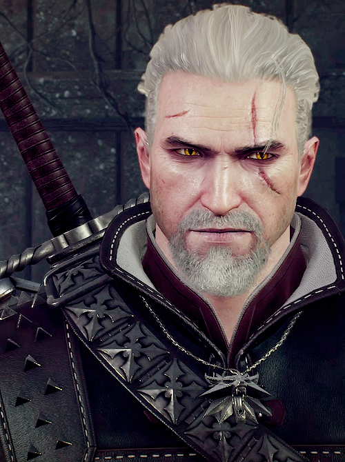
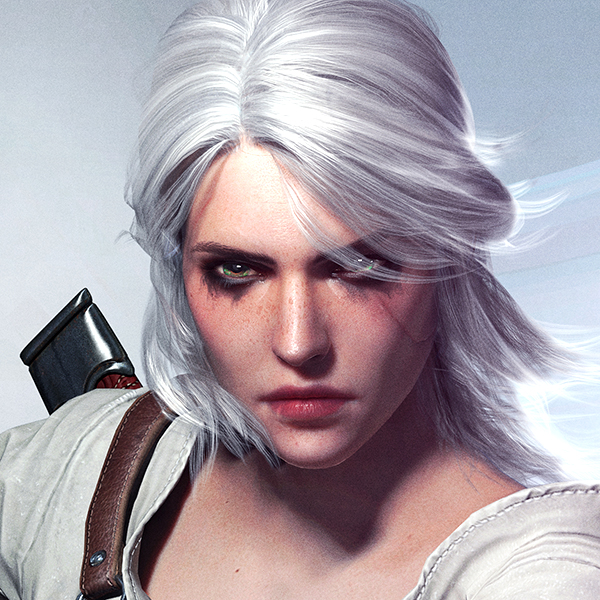
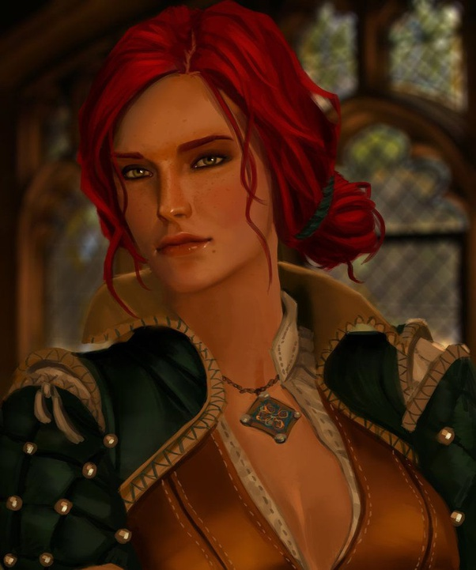
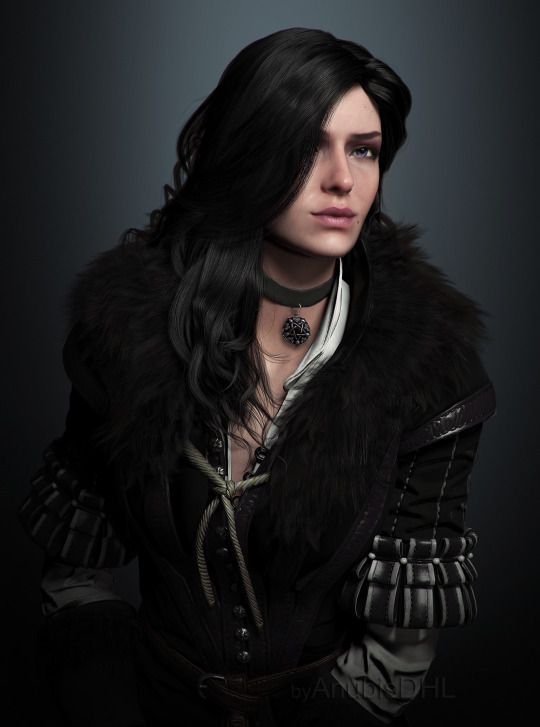

Main Characters Back Story
Geralt
Geralt was the son of the sorceress Visenna and, presumably, the warrior Korin, but when he was born Visenna left him with the School of the Wolf at Kaer Morhen. There, Geralt was trained and made to be a witcher. He survived the many blistering mutations required to grant witchers their abilities and passed the Trial of the Grasses. Geralt's intensive training and the mutagenic experimentation carried out upon him, granted him considerably greater strength, speed, endurance, resilience, healing, senses, complete immunity to diseases and conventional poisons, and extreme resistance to pain. During his training at the witcher school, he made friends with several students, such as Gweld and Eskel, and was trained by Vesemir in harsh conditions, one in which resulted in a student dying. Geralt was eventually put through the Trial of Forest Eyes, where he was left tied up in the woods and blindfolded and needed to return to the keep by the morning or he would fail. He was helped out of his binds by the elf Aideen, where they went to look at the non-human reservation to find the camp had been attacked by vrans. They then left and came across some Cat School witchers training and wrestling. Aideen then unbound Geralt and left him to return to his master. Later on, the Wolf School and the Cat School had a tournament between them, organized by King Radowit II who secretly plotted with the Cat School to kill the witchers from the Wolf School. In the first round, Geralt and Gweld faced off, slowly realizing while they were fighting that the whole tournament was a ruse. As they came to that realization however, a druid put a mind control spell upon Gweld which made him violently attack Geralt, forcing Geralt to kill his friend with a sword through the chest. Right after this, soldiers under Radowit's command surrounded the witchers and started to kill them all, but Geralt was able to escape on horseback, causing Radowit to put a bounty on his head. Geralt then came across Aideen again in the woods, who persuaded him not to kill the soldiers who slaughtered his fellow witchers, though he did kill one of Radowit's men that he saw along his trip back to Hertch, where he warned the elders about Radowit and the Cat School's betrayal. Due to his brilliant success in training, Geralt was selected for additional mutation experiments. He was the only witcher to have survived these experiments, his stark white hair being a side effect of these additional mutations. After finishing his witcher training, Geralt set off into the world on a horse named Roach, a name he would bestow upon every one of his later horses. Thus, he became a monster slayer for hire. Read More
Ciri
Ciri was born in Skellige in Belleteyn of the following year and initially, Calanthe ordered her advisor Mousesack to kill Geralt, wishing to break free from the Law of Surprise. Mousesack was ready to go, as nobody simply refused the queen, but when he was summoned a short time later Calanthe retracted the order without explanation. Growing up, not much is known about Ciri's relationship with her parents, though it appeared Pavetta adored her daughter, with others remarking how it was rare for her to be parted from Ciri. However, this didn't stop Pavetta from secretly sending Ciri ashore just as the small family was set to sail out from Skellige to Cintra, against Calanthe's wishes, who wished for them all to stay. Shortly after, Pavetta and Duny died at sea around the Sedna Abyss, making Ciri an orphan before she was 5 years old. Angry at her nephew-in-law, Crach an Craite, for letting them sail out, Calanthe then had Crach swear a blood oath that he'd always protect Ciri before deciding to forbid Ciri from visiting the isles again. However, this ban only lasted 6 months before Calanthe let Ciri visit Skellige once more every summer and winter. With the death of her mother, Ciri was now the only remaining heir to Cintra and thus Calanthe took special care to raise her granddaughter. Despite Calanthe's attempts to keep Ciri shielded from learning about being a Child of Surprise and that she was destined to be a witcher since birth, Ciri's nanny told the young girl all about a white-haired witcher, and that he'd one day come for her to be taken away to be trained as one as well. When Calanthe found out she was furious but by then the seeds had been sown and Ciri began to firmly believe that was her destiny. Then, 6 years almost to the day when Duny's curse was lifted, Geralt returned to Cintra but Calanthe, not wishing to lose her only remaining descendant, hid Ciri amongst a group of boys and had them playing around in the moat outside the castle when Geralt dropped in, who erroneously believed Pavetta had a son and wondered which one "he" was in the group. Despite this, he refused to take any child with him and left without even learning the true identity of Pavetta's child. Read More
Triss
Not much is known about Triss' upbringing. Not even a precise time of her birth, which is a subject to some degree of confusion - see below. What is known is the fact, that she was born and lived as a child in Maribor. Sometime during her childhood, she had a conduit moment and was noticed by sorcerers. Thus, she found her way to Aretuza. Here, she became a sorceress on her own, specializing in making of magical potions, mainly healing ones. This was rather amusing twist of fate as she herself was allergic to magical potions and could only tolerate non magical ones. After the graduation, she became a very well known and respected sorceress taking her assignment as a advisor to the throne of Temeria.During her studies, she befriended a fellow sorceress Yennefer of Vengerberg. During 1249, which is a time when a story "The Last Wish" takes place, the two of them were already close friends and colleagues. When the Great War with Nilfgaard started and the Kingdom of Cintra was destroyed, sorcerers and sorceresses under the leadership of Vilgefortz of Roggeveen decided to stand on Sodden Hill supporting Northern troops with their magic. Here, they wanted to stop the invading forces. Triss was among those who volunteered. The battle was brutal and the mages stood against incredibly strong forces but in the end, they managed to defeat the invaders. The cost of victory was high, though, as 13 mages died. As a matter of fact, it was first believed that the number of dead was 14 - the last one being Triss. She was very seriously wounded, sustaining burns on her body, but also having all of her hair burnt off. With Yennefer, the only mage that would have still recognised her, blinded during the battle, she was counted amongst the dead.When Geralt rode near Sodden some time later, he saw the memory stone erected in remembrance of those who gave their lives to protect the North. Triss was among them, which saddened Geralt very deeply. When it was later discovered that Triss had indeed managed to survive the battle, she became known as "the fourteenth of the hill". Read More
Yennefer
Born in 1173, Yennefer had a rough childhood from the moment she was born due to her congenital hunchback. Her father immediately detested her due to this deformity and blamed Yennefer's mother for it, claiming it was through her side, with mages and elven blood, not to mention her having had an abortion before, that caused the deformity. Her mother initially tried to protect Yennefer, believing it was by the will of the gods, but her father still struck Yennefer until one day he left them both for someone else. After this, her mother, upset that her husband had left, also began to beat her own daughter. At some point, due to her magical potential, she was received in the Aretuza school for sorceresses, where rectoress Tissaia de Vries became her teacher and mother figure. During her training, Yennefer tried to kill herself by cutting both of her wrists, severing her tendons, though she survived. Tissaia claimed that the purposefulness of her attempt was the only thing that prevented her from feeling contempt for her weakness, and continued her training. In accordance with the sorceresses' tradition, any physical flaw, including her hunchback, was magically removed. Yennefer eventually graduated as a sorceress. Meeting GeraltAt some point, Yennefer set herself up in the town of Rinde and, ignoring King Heribert's rules that no magic users could stay in Redania, openly practiced her magic and provided her magical services to clients by staying with Novigrad's ambassador, Beau Berrant, thus granting her asylum from the law while in the ambassador's home.One morning, a witcher intruded on her sleep, revealing himself as Geralt of Rivia and that he needed her assistance in healing his friend, Dandelion, who had been afflicted by a djinn. After an initially rough greeting where Geralt responded sarcastically to her questions, Yennefer agreed to heal the bard, but she secretly made preparations in hopes of capturing the djinn, after Dandelion makes his final wish. When Geralt tried to stop her from using Dandelion, her spell took hold of the witcher, charming him to do her will against those on the town council who were against her.After Geralt is arrested, she has Dandelion, now awakened teleported out into town with instructions to make his wish to free Geralt. Yennefer tried to capture the djinn, but it fought her, destroying a good part of Rinde in the struggle, not knowing that the djinn's master was not Dandelion, but in fact, Geralt, who still held one wish. Geralt arrived to see Yennefer struggle with her spell, and he tried to stop her, leading them to fight one another. She got the better of him, and he revealed to her that he was the one with the last wish that could free the djinn. Geralt knew that the moment he made a wish, Yennefer would be too weak to contain the djinn and it would kill her. So Geralt saved their lives, by wishing their fates were tied together. Yennefer was grateful to the witcher, willing to bind himself to her, and the two began a relationship. Read More